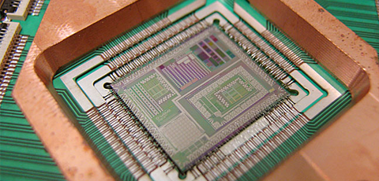

量子论的一些基本论点显得并不“玄乎”，但它的推论显得很“玄”。 我们假设一个“量子”距离也就是最小距离的两个端点A和B。 按照量子论，物体从A不经过A和B中的任何一个点就能直接到达B。 换句话说，物体在A点突然消失，与此同时在B点出现。 除了神话，你无法在现实的宏观世界找到一个这样的例子。 量子论把人们在宏观世界里建立起来的“常识”和“直觉”打了个七零八落
薛定谔之猫是关于量子理论的一个理想实验。实验内容是：这只猫十分可怜，它被封在一个密室里，密室里有食物有毒药。 毒药瓶上有一个锤子，锤子由一个电子开关控制，电子开关由放射性原子控制。 如果原子核衰变，则放出α粒子，触动电子开关，锤子落下，砸碎毒药瓶，释放出里面的氰化物气体，猫必死无疑。 这个残忍的装置由奥地利物理学家埃尔温·薛定谔所设计，所以此猫便叫做薛定谔猫。 量子理论认为：如果没有揭开盖子，进行观察，我们永远也不知道猫是死是活，它将永远处于非死非活的叠加态，这与我们的日常经验严重相违。
瑞典皇家科学院2012年10月9日宣布，将2012年诺贝尔物理学奖授予法国物理学家塞尔日·阿罗什和美国物理学家戴维·瓦恩兰，以表彰他们在量子物理学方面的卓越研究。 他说，这两位物理学家用突破性的实验方法使单个粒子动态系统可被测量和操作。 他们独立发明并优化了测量与操作单个粒子的实验方法，而实验中还能保持单个粒子的量子物理性质，这一物理学研究的突破在之前是不可想象的。
